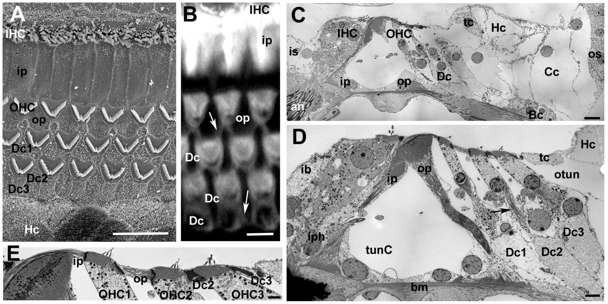
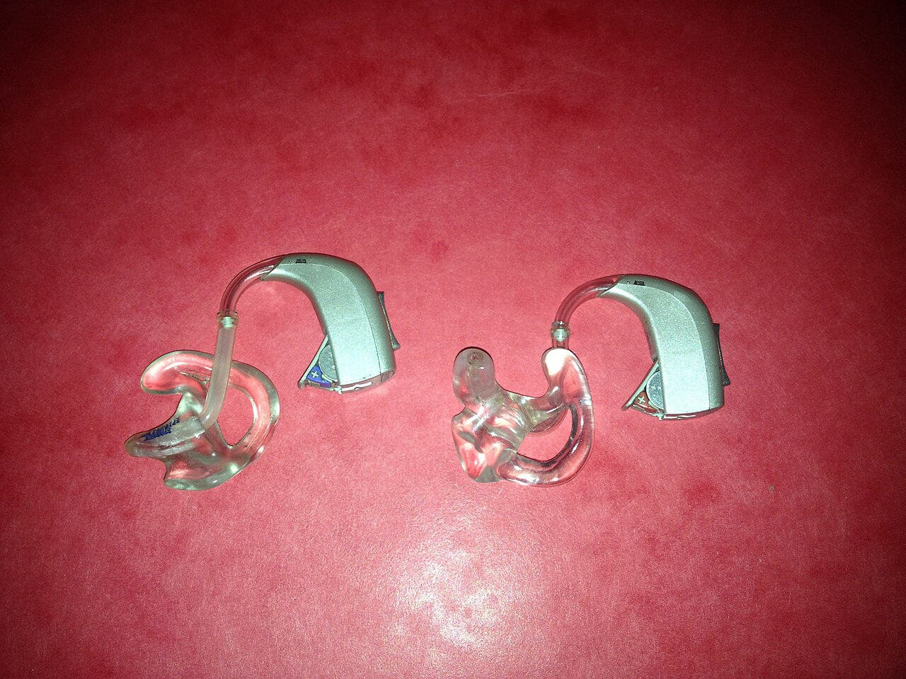
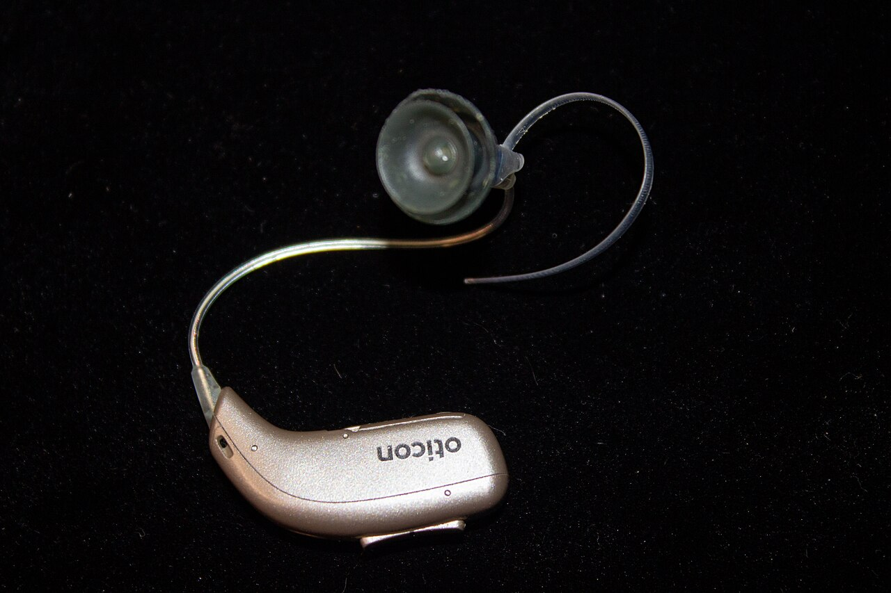
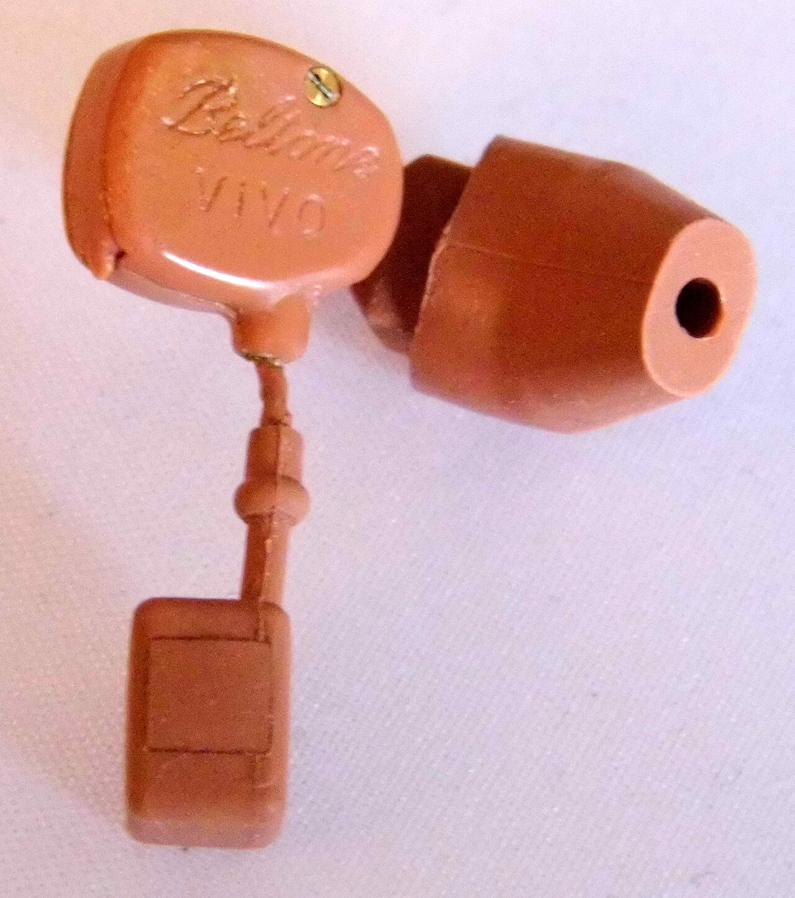
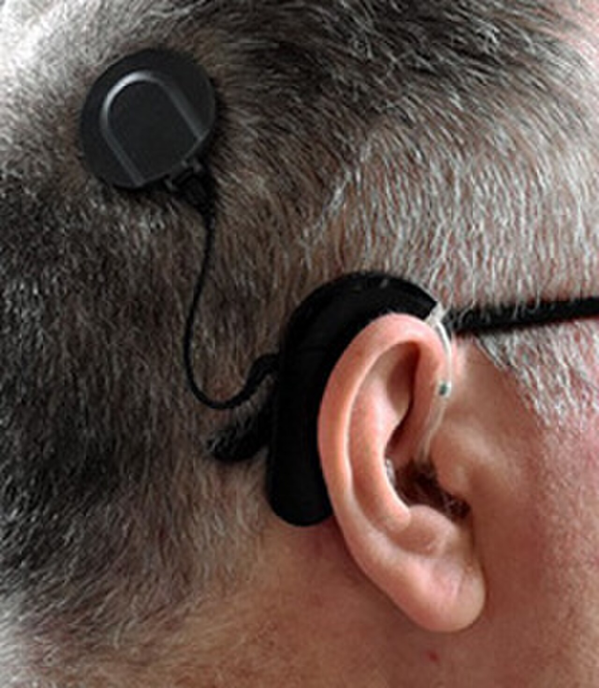
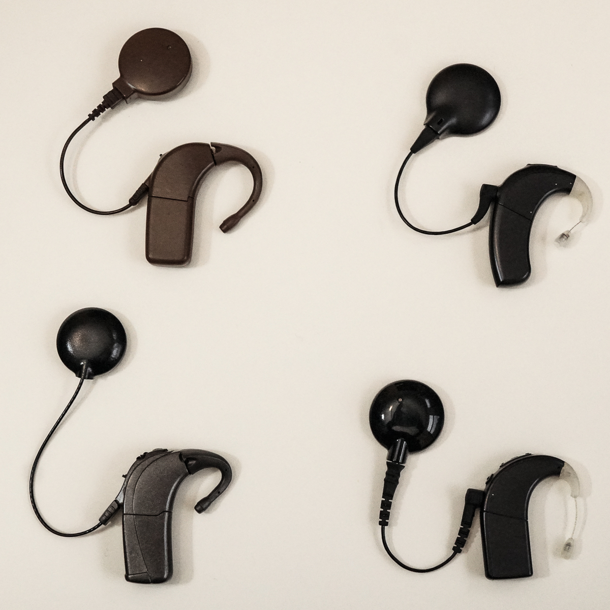
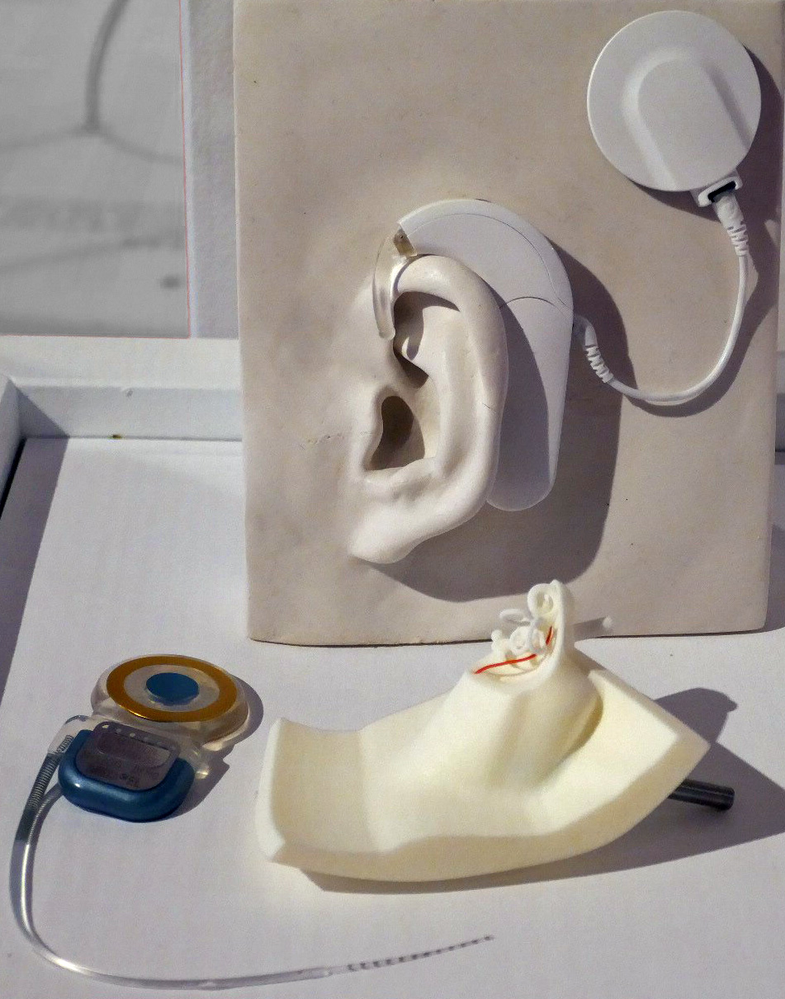
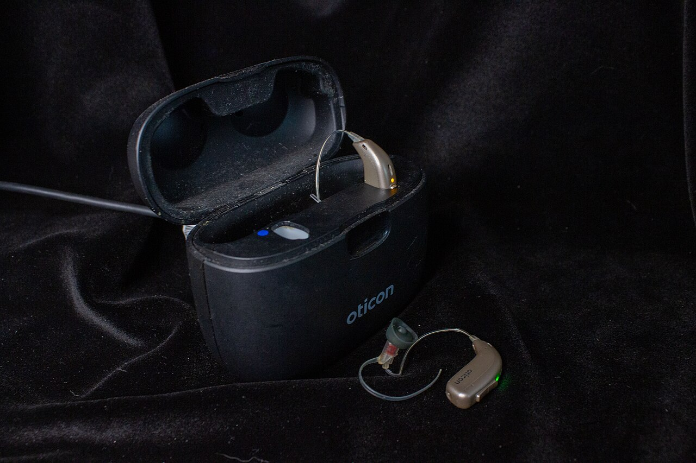

Amplifies
Hearing aid
- Makes sound louder and clearer
- Delivers amplified acoustic sound into the ear canal
- Relies on the person's remaining hair cells
A Grade 11 physics exhibition
How can technology help people hear again? Follow a sound from a vibrating object, through the ear, and into the devices that rebuild the pathway when it breaks.
The world of sound
A vibrating object pushes on neighbouring particles, which push on the next ones. Energy travels outward; the particles themselves only jiggle back and forth around where they started.
Sound needs a medium — air, water or solid. In a vacuum there are no particles to push, so there is no sound.
Particles oscillate parallel to the direction the wave travels, creating compressions (crowded, high pressure) and rarefactions (spread out, low pressure).
Particles that are closer and more tightly bonded pass the push on more quickly: about 343 m/s in air, 1,480 m/s in water, 5,960 m/s in steel.
Frequency ()
Vibrations per second. Heard as pitch. Humans hear roughly 20 Hz – 20,000 Hz.
Amplitude
Size of the pressure change. Heard as loudness.
Wavelength ()
Distance between two compressions. A 343 Hz tone in air has λ = 1 m.
Intensity ()
Power per area. Proportional to amplitude squared, measured in decibels.
Acoustic wave & particle simulator
The top panel shows what really happens in the air: particles shifting left and right, bunching into shaded compressions. The graph below is a picture of that motion — not the shape of the wave in space.
Medium
Speed is set by the medium. Raise the frequency and the wavelength shrinks so that their product stays equal to the speed.
The blue curve plots each particle's displacement (how far it has moved left or right) against its position. Up on the graph means moved right; down means moved left. The air is not moving up and down.
The dashed amber curve is pressure. It is a quarter-wavelength ahead of displacement: pressure is highest where particles on either side move towards each other.
A 440 Hz tone completes 440 cycles every second — far too fast to see. The simulation slows time down by the factor shown, while all distances (wavelengths and axis) stay at their true values in metres.
How humans hear
The ear is a chain of energy converters. Select any structure, or step through the journey, to see how a pressure wave becomes a nerve signal.
The pathway of sound
Explore the Human Ear in 3D
Interactive model · Rotate & zoom
1 / 8 · Acoustic
1
Acoustic
air pressure waves
2
Mechanical
eardrum & ossicles
3
Hydraulic
cochlear fluid
4
Electrical
hair cells & nerve
Understanding hearing loss
Over 1.5 billion people live with some degree of hearing loss (WHO). The right technology depends entirely on where the pathway fails.
Where is the pathway blocked?
Sound cannot get in efficiently
Earwax, fluid behind the eardrum (ear infection), a perforated eardrum, or stiffened ossicles (otosclerosis) reduce how much vibration reaches the cochlea. The inner ear itself still works.
Typical approach
Often medical or surgical treatment (removing a blockage, treating infection, repairing the eardrum). If it remains, amplification works well because the cochlea is healthy — or a bone-conduction device can bypass the middle ear.

Under an electron microscope, each hair cell carries a staircase bundle of stereocilia. Loud noise can bend, fuse or break them. In humans, lost hair cells do not grow back.
Hair cells along the basilar membrane
Nerve signal sent to the brain
Strong: hair cells at this pitch are healthy.
Hearing aids
A modern hearing aid is a miniature computer that reshapes sound to match one person's hearing, frequency by frequency.



Inside a hearing aid
Small graphs show the form of the signal at each stage. Select a stage to learn what it does.
Stage 1 of 6
Most sensorineural loss affects high frequencies first — the sounds of s, f, th and t. Boosting all frequencies would make vowels and background rumble uncomfortably loud while consonants stay unclear. The audiologist measures hearing at each frequency (an audiogram) and the processor applies gain only where it is needed.
A hearing aid can only make sound louder and clearer; it cannot repair damaged hair cells. Where hair cells are completely lost, amplified sound has nothing to detect it. Noisy rooms, echoes and feedback remain challenges.
Cochlear implants
When too few hair cells remain, a cochlear implant takes over their job: converting sound into electrical stimulation of the auditory nerve.


Inside a cochlear implant
Small graphs show the form of the signal at each stage. Select a stage to learn what it does.
Stage 1 of 7
A cochlear implant does not restore normal hearing. It provides a different way of delivering sound information — about 12–22 electrodes standing in for roughly 15,000 hair cells.
Many users understand speech well, especially in quiet places, but sound is described at first as robotic or buzzy. The brain gradually learns to interpret the new signals.
07 · The physics behind the technology
The wave equation
Example: the note A (440 Hz) in air
Frequency and period
is the period: the time for one full vibration, in seconds (s). Higher frequency means shorter period and higher pitch.
Example: a 4,000 Hz consonant sound
Sound intensity & decibels
Intensity and the decibel scale
Every +10 dB means ten times the intensity. Long exposure above about 85 dB can damage hair cells.
Amplification & gain
A hearing aid giving 30 dB of gain multiplies the sound power by 1,000. The extra energy comes from the battery, not from the sound — energy is conserved.
Electrical stimulation
Each implant pulse delivers a small charge (coulombs): current (typically hundreds of microamps) for a time (tens of microseconds). A larger charge activates more nerve fibres and is heard as louder.
Sampling & quantization
From analog to digital
The teal curve is the smooth (analog) voltage from the microphone. The processor measures it at regular moments (amber dots) and rounds each value to the nearest level. More samples and more bits give a closer copy. To capture a frequency , the sampling rate must be more than twice it — the Nyquist condition:
Microphone
Sound → electrical
A vibrating diaphragm changes capacitance or moves a coil in a magnetic field, inducing a voltage.
Converter
Analog → digital
The smooth voltage is sampled and stored as numbers.
Processor
Numbers → numbers
Algorithms split frequencies and apply gain, compression and noise reduction.
Output
Electrical → sound or nerve
A receiver makes sound again (hearing aid), or electrodes stimulate nerves (implant).
Comparing technologies
Both start with a microphone and a processor. They differ in the final step — and that decides who they can help.
Amplifies

Bypasses
Real-life impact & future innovations
Hearing well supports conversation, learning, work and safety. Untreated hearing loss is linked with isolation, and in older adults it is one of the largest modifiable risk factors for dementia identified by the Lancet Commission.
Today
Bluetooth streaming from phones, rechargeable batteries, over-the-counter hearing aids for mild loss (approved in the USA in 2022), and apps that let users fine-tune their own settings.
Improving now
Machine-learning noise reduction that separates a voice from a noisy restaurant, and hybrid systems combining an implant for high pitches with acoustic amplification for low pitches.
Under research
Gene therapy that has restored some hearing in children with otoferlin-gene deafness in early clinical trials; studies on regrowing hair cells; and optogenetic implants that use light for finer stimulation. These are promising but not yet routine treatments.

10 · Conclusion
Sound is physics. Hearing is biology. Technology brings them together.
A vibration becomes a pressure wave, a pressure wave becomes motion, motion becomes an electrical signal and that signal becomes meaning. When part of that chain fails, engineers use the same physics — transduction, waves, signals and energy — to build a new path. Understanding sound is the first step towards giving it back.
References & sources
All diagrams, animations and the simulator are original works made for this project. Anatomical diagrams are schematic and not to scale.